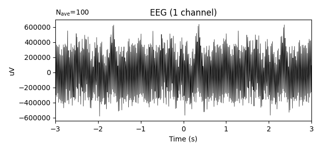

Note
Click here to download the full example code
Interface with MNE-python¶
This example shows how to use this package with MNE-python.
It relies on the function raw_to_mask, which takes as input a MNE.Raw
instance and an events array, and returns the corresponding input signals
and masks for the Comodulogram.fit method.
import mne
import numpy as np
import os.path as op
import matplotlib.pyplot as plt
from pactools import simulate_pac, raw_to_mask, Comodulogram, MaskIterator
Out:
/home/tom/.conda/envs/py38/lib/python3.8/site-packages/mne/viz/backends/renderer.py:32: ImportWarning: can't resolve package from __spec__ or __package__, falling back on __name__ and __path__
_mod = importlib.__import__(
Simulate a dataset and save it out
n_events = 100
mu = 1. # mean onset of PAC in seconds
sigma = 0.25 # standard deviation of onset of PAC in seconds
trial_len = 2. # len of the simulated trial in seconds
first_samp = 5 # seconds before the first sample and after the last
fs = 200. # Hz
high_fq = 50.0 # Hz
low_fq = 3.0 # Hz
low_fq_width = 2.0 # Hz
n_points = int(trial_len * fs)
noise_level = 0.4
def gaussian1d(array, mu, sigma):
return np.exp(-0.5 * ((array - mu) / sigma) ** 2)
# leave one channel for events and make signal as long as events
# with a bit of room on either side so events don't get cut off
signal = np.zeros((2, int(n_points * n_events + 2 * first_samp * fs)))
events = np.zeros((n_events, 3), dtype=int)
events[:, 0] = np.arange((first_samp + mu) * fs,
n_points * n_events + (first_samp + mu) * fs,
trial_len * fs, dtype=int)
events[:, 2] = np.ones((n_events))
mod_fun = gaussian1d(np.arange(n_points), mu * fs, sigma * fs)
for i in range(n_events):
signal_no_pac = simulate_pac(n_points=n_points, fs=fs,
high_fq=high_fq, low_fq=low_fq,
low_fq_width=low_fq_width,
noise_level=1.0, random_state=i)
signal_pac = simulate_pac(n_points=n_points, fs=fs,
high_fq=high_fq, low_fq=low_fq,
low_fq_width=low_fq_width,
noise_level=noise_level, random_state=i)
signal[0, i * n_points:(i + 1) * n_points] = \
signal_pac * mod_fun + signal_no_pac * (1 - mod_fun)
info = mne.create_info(['Ch1', 'STI 014'], fs, ['eeg', 'stim'])
raw = mne.io.RawArray(signal, info)
raw.add_events(events, stim_channel='STI 014')
Out:
Creating RawArray with float64 data, n_channels=2, n_times=42000
Range : 0 ... 41999 = 0.000 ... 209.995 secs
Ready.
Let’s plot the signal and its power spectral density to visualize the data. As shown in the plots below, there is a peak for the driver frequency at 3 Hz and a peak for the carrier frequency at 50 Hz but phase-amplitude coupling cannot be seen in the evoked plot by eye because the signal is averaged over different phases for each epoch.
raw.plot_psd(fmax=60)
epochs = mne.Epochs(raw, events, tmin=-3, tmax=3)
epochs.average().plot()

- 
Out:
Effective window size : 10.240 (s)
Need more than one channel to make topography for eeg. Disabling interactivity.
/home/tom/work/github/pactools/examples/plot_mne_epoch_masking.py:71: RuntimeWarning: Channel locations not available. Disabling spatial colors.
raw.plot_psd(fmax=60)
100 matching events found
Applying baseline correction (mode: mean)
Not setting metadata
0 projection items activated
Need more than one channel to make topography for eeg. Disabling interactivity.
<Figure size 640x300 with 1 Axes>
Let’s save the raw object out for input/output demonstration purposes
root = mne.utils._TempDir()
raw.save(op.join(root, 'pac_example-raw.fif'))
Out:
Writing /tmp/tmp_mne_tempdir_1v72636y/pac_example-raw.fif
Closing /tmp/tmp_mne_tempdir_1v72636y/pac_example-raw.fif [done]
Here we define how to build the epochs: which channels will be selected, and on which time window around each event.
raw = mne.io.Raw(op.join(root, 'pac_example-raw.fif'))
events = mne.find_events(raw)
# select the time interval around the events
tmin, tmax = mu - 3 * sigma, mu + 3 * sigma
# select the channels (phase_channel, amplitude_channel)
ixs = (0, 0)
Out:
Opening raw data file /tmp/tmp_mne_tempdir_1v72636y/pac_example-raw.fif...
Isotrak not found
Range : 0 ... 41999 = 0.000 ... 209.995 secs
Ready.
100 events found
Event IDs: [1]
Then, we create the inputs with the function raw_to_mask, which creates the input arrays and the mask arrays. These arrays are then given to a comodulogram instance with the fit method, and the plot method draws the results.
# create the input array for Comodulogram.fit
low_sig, high_sig, mask = raw_to_mask(raw, ixs=ixs, events=events, tmin=tmin,
tmax=tmax)
The mask is an iterable which goes over the _unique_ events in the event array (if it is 3D). PAC is estimated where the mask is False. Alternatively, we could also compute the MaskIterator object directly. This is useful if you want to compute PAC on other kinds of time series, for example source time courses.
low_sig, high_sig = raw[ixs[0], :][0], raw[ixs[1], :][0]
mask = MaskIterator(events, tmin, tmax, raw.n_times, raw.info['sfreq'])
# create the instance of Comodulogram
estimator = Comodulogram(fs=raw.info['sfreq'],
low_fq_range=np.linspace(1, 10, 20), low_fq_width=2.,
method='duprelatour', progress_bar=True)
# compute the comodulogram
estimator.fit(low_sig, high_sig, mask)
# plot the results
estimator.plot(tight_layout=False)
plt.show()
Out:
[ ] 0% | 0.00 sec | comodulogram: DAR(10, 1)
[.. ] 5% | 0.29 sec | comodulogram: DAR(10, 1)
[.... ] 10% | 0.40 sec | comodulogram: DAR(10, 1)
[...... ] 15% | 0.51 sec | comodulogram: DAR(10, 1)
[........ ] 20% | 0.69 sec | comodulogram: DAR(10, 1)
[.......... ] 25% | 0.79 sec | comodulogram: DAR(10, 1)
[............ ] 30% | 0.88 sec | comodulogram: DAR(10, 1)
[.............. ] 35% | 0.98 sec | comodulogram: DAR(10, 1)
[................ ] 40% | 1.14 sec | comodulogram: DAR(10, 1)
[.................. ] 45% | 1.27 sec | comodulogram: DAR(10, 1)
[.................... ] 50% | 1.40 sec | comodulogram: DAR(10, 1)
[...................... ] 55% | 1.50 sec | comodulogram: DAR(10, 1)
[........................ ] 60% | 1.60 sec | comodulogram: DAR(10, 1)
[.......................... ] 65% | 1.70 sec | comodulogram: DAR(10, 1)
[............................ ] 70% | 1.81 sec | comodulogram: DAR(10, 1)
[.............................. ] 75% | 1.93 sec | comodulogram: DAR(10, 1)
[................................ ] 80% | 2.07 sec | comodulogram: DAR(10, 1)
[.................................. ] 85% | 2.17 sec | comodulogram: DAR(10, 1)
[.................................... ] 90% | 2.28 sec | comodulogram: DAR(10, 1)
[...................................... ] 95% | 2.39 sec | comodulogram: DAR(10, 1)
[........................................] 100% | 2.48 sec | comodulogram: DAR(10, 1)
[........................................] 100% | 2.48 sec | comodulogram: DAR(10, 1) /home/tom/work/github/pactools/examples/plot_mne_epoch_masking.py:122: UserWarning: Matplotlib is currently using agg, which is a non-GUI backend, so cannot show the figure.
plt.show()
Total running time of the script: ( 0 minutes 4.262 seconds)